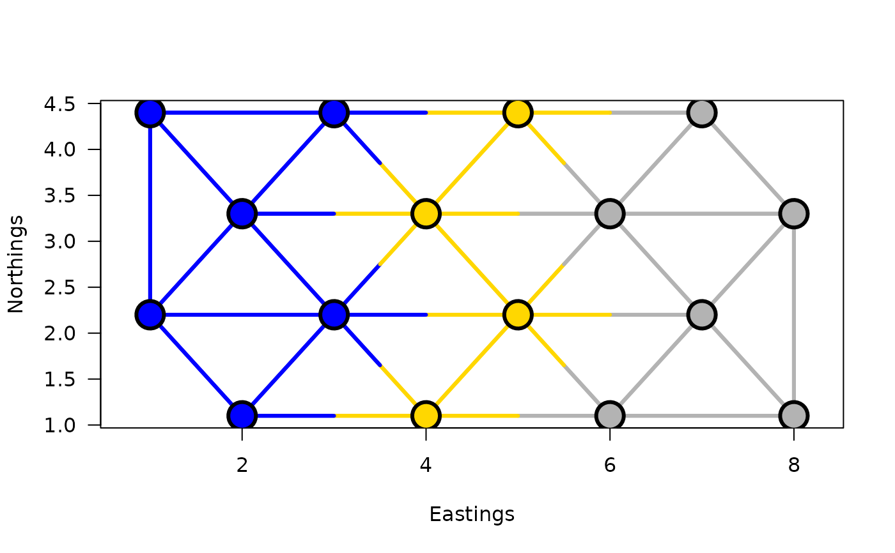
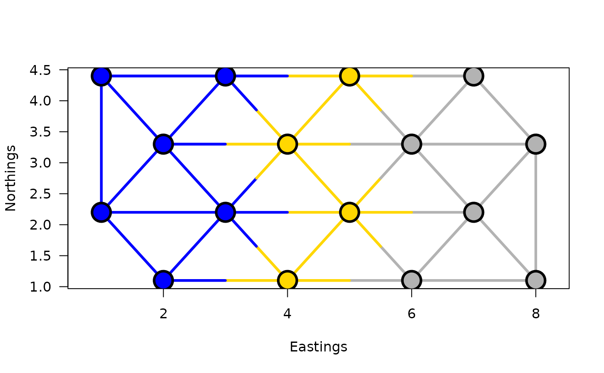
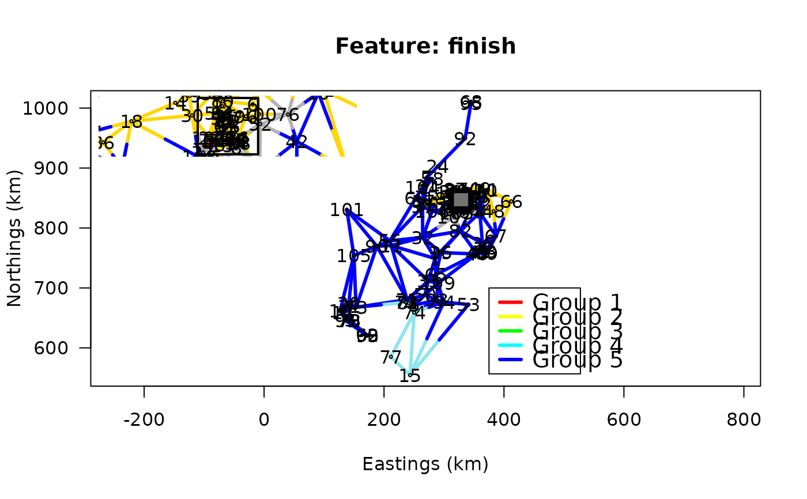
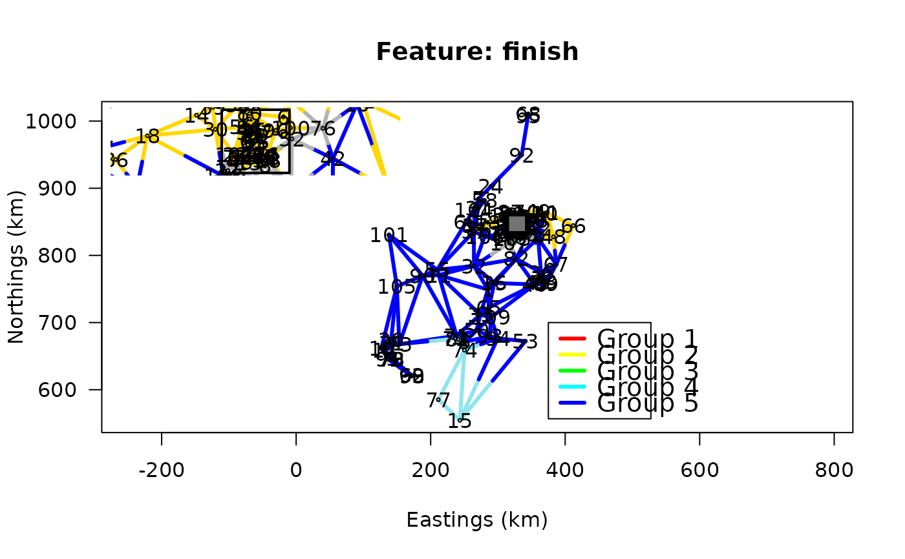
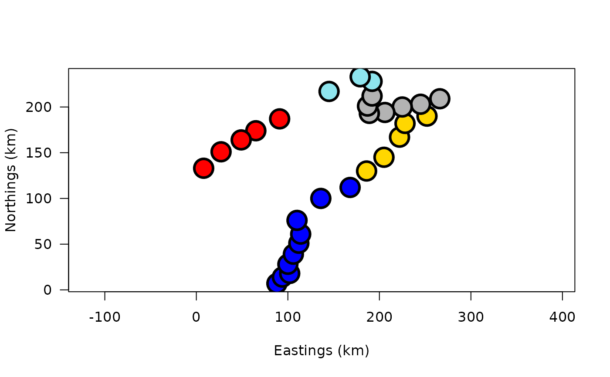
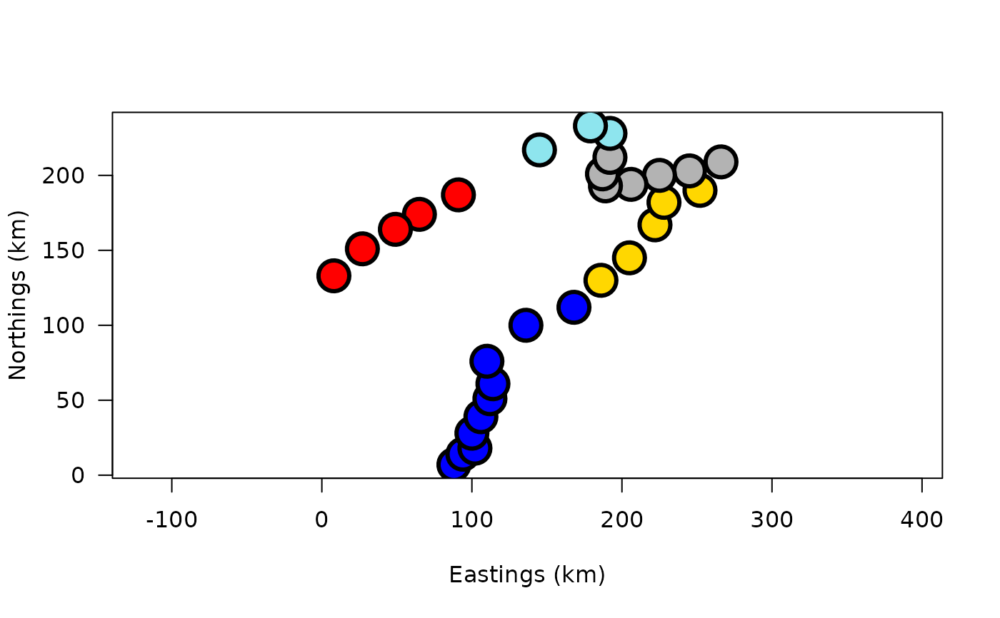

Function constr.hclust carries out space-constrained or
time-constrained agglomerative clustering from a multivariate dissimilarity
matrix.
constr.hclust(
d,
method = "ward.D2",
links,
coords,
beta = -0.25,
chron = FALSE,
members = NULL
)Arguments
- d
A
dist-classdissimilarity (distance) matrix.- method
The agglomeration method to be used (default: "ward.D2"; see details).
- links
A list of edges (or links) connecting the points. May be omitted in some cases; see details and examples.
- coords
Coordinates of the observations (data rows) in the dissimilarity matrix
d. The coordinates are used for plotting maps of the clustering results. This matrix may be omitted when the user does not wish to print maps of the clustering results or when nolinksfile is provided.coordsis a matrix or data frame with two columns, following the convention of the Cartesian plane: first column for abscissa, second column for ordinate. See examples.- beta
The beta parameter for beta-flexible clustering (default:
beta = -0.25).- chron
Logical (TRUE or FALSE) indicating whether a chronological (i.e. time-constrained or spatial transect) clustering should be calculated (default:
chron = FALSE).- members
NULL or a vector with length size of
d(default: NULL; See details).
Value
A constr.hclust-class object.
Details
The agglomeration method to be used should be (an unambiguous
abbreviation of) one of "ward.D",
"ward.D2", "single", "complete",
"average" (UPGMA), "mcquitty" (WPGMA),
"centroid" (UPGMC), "median" (WPGMC), or
"flexible". Method "ward.D2" (default) implements the
Ward (1963) clustering criterion, method
"ward.D" does not (Murtagh and Legendre, 2014).
Agglomerative clustering can be carried out with a constraint of spatial or
temporal contiguity. This means that only the objects that are linked in
links are considered to be candidates for clustering: the next pair of
objects to cluster will be the pair that has the lowest dissimilarity value
among the pairs that are linked.
The same rule applies during the subsequent clustering steps, which involve groups of objects: the list of links is updated after each agglomeration step. All objects that are neighbours of one of the components that have fused are now neighbours of the newly formed cluster.
The edges (links) are specified using argument links, which can be an
object of class nb (see, e.g., tri2nb), an object of
class listw (see, e.g., nb2listw), a two-element
list or an object coercible as a such (e.g., a two-column
dataframe), or a two-column matrix with each row representing an edge
and the columns representing the two ends of the edges. For lists with more
than two elements, as well as dataframes or matrices with more than
two-columns, only the first two elements or columns are used for the
analysis. The edges are interpreted as being non directional; there is no
need to specify an edge going from point a to point b and one going from
point b to point a. While doing so is generally inconsequential for the
analysis, it carries some penalty in terms of computation time. It is a good
practice to place the nodes in increasing order of numbers from the top to
the bottom and from the left to the right of the list but this is not
mandatory. A word of caution: in cases where clusters with identical minimum
distances occur, the order of the edges in the list may have an influence on
the result. Alternative results would be statistically equivalent.
When argument link is omitted, regular (unconstrained) clustering is
performed and a hclust-class object is returned unless
argument chron = TRUE. When argument chron = TRUE,
chronological clustering is performed, taking the order of observations as
their positions in the sequence. Argument links is not used when
chron = TRUE. Argument chron allows one to perform a
chronological clustering in the case where observations are ordered
chronologically. Here, the term "chronologically" should not be taken
restrictively: the method remains applicable to other sequential data sets
such as spatial series made of observations along a transect.
When the graph described by link is not entirely connected, a warning
message is issued to warn the user about the presence and number of disjoint
clusters and a procedure is suggested to identify the disjoint clusters. The
disjoint clusters (or singletons) are merged in the order of their indices
(i.e. the two clusters with smallest indices are merged first) and so on
until all of disjoint clusters have been merged. The dissimilarity at which
these clusters are merged is a missing value (NA) in vector
height (i.e., unconnected clusters have undefined dissimilarities in
constrained clustering).
If members != NULL, then d is taken to be a dissimilarity
matrix between clusters instead of dissimilarities between individual
objects. Then, members must be a vector giving the number of
observations per cluster. In this way, the hierarchical clustering algorithm
can be ‘started in the middle of the dendrogram’, e.g., in order to
reconstruct the part of the tree above a cut. See examples in hclust
for details on that functionality."
Memory storage and time to compute constrained clustering for N objects. The Lance and Williams algorithm for agglomerative clustering uses dissimilarity matrices. The amount of memory needed to store the dissimilarities among N observations as 64-bit double precision floating point variables (IEEE 754) is 8*N*(N-1)/2 bytes. For example, a dissimilarity matrix among 22 500 observations would require 2 024 910 000 bytes (1.89 GiB) of storage whereas one among 100 000 observations would take up 39 999 600 000 bytes (37.25 GiB). The implementation in this function needs to cache a copy of the dissimilarity matrix as its elements are modified following each merging of the closest clusters or singletons, thereby doubling the amounts of required memory shown above. Memory needed to store the other information associated with the clustering is much smaller. Users should make sure to have the necessary memory space (and system stability) before attempting to analyze large data sets. What is considered a large amount of memory has increased over time as computer hardware evolved with time. We let users apply contemporary common sense as to what sample sizes represent manageable clustering problems. Computation time grows with N at roughly the same speed as memory storage requirement to store the dissimilarity matrices increases.
With large data sets, a manageable output describing the classification of
the sites is obtained with function cutree(x, k) where k is the
number of groups. A dendrogram would be unreadable.
References
Guénard, G. and P. Legendre. 2022. Hierarchical clustering with contiguity constraint in R. Journal of Statistical Software 103(7): 1-26 doi:10.18637/jss.v103.i07
Langfelder, P. and S. Horvath. 2012. Fast R functions for robust correlations and hierarchical clustering. Journal of Statistical Software 46(11): 1-17. doi:10.18637/jss.v046.i11
Legendre, P. and L. Legendre. 2012. Numerical ecology, 3rd English edition. Elsevier Science BV, Amsterdam. doi:10.1016/S0304-3800(00)00291-X
Murtagh, F. and P. Legendre. 2014. Ward’s hierarchical agglomerative clustering method: which algorithms implement Ward’s criterion? Journal of Classification 31: 274-295. doi:10.1007/s00357-014-9161-z
Ward, J. H. 1963. Hierarchical grouping to optimize an objective function. Journal of the American Statistical Association 58: 236-244. doi:10.1080/01621459.1963.10500845
See also
Examples
## First example: Artificial map data from Legendre & Legendre
## (2012, Fig. 13.26): n = 16
dat <- c(41,42,25,38,50,30,41,43,43,41,30,50,38,25,42,41)
coord.dat <- matrix(c(1,3,5,7,2,4,6,8,1,3,5,7,2,4,6,8,
4.4,4.4,4.4,4.4,3.3,3.3,3.3,3.3,
2.2,2.2,2.2,2.2,1.1,1.1,1.1,1.1),16,2)
## Obtaining a list of neighbours:
library(spdep)
listW <- nb2listw(tri2nb(coord.dat), style="B")
#> Warning: style is M (missing); style should be set to a valid value
links.mat.dat <- listw2mat(listW)
neighbors <- listw2sn(listW)[,1:2]
## Calculating the (Euclidean) distance between points:
D.dat <- dist(dat)
## Display the points:
plot(coord.dat, type='n',asp=1)
title("Delaunay triangulation")
text(coord.dat, labels=as.character(as.matrix(dat)), pos=3)
for(i in 1:nrow(neighbors))
lines(rbind(coord.dat[neighbors[i,1],],
coord.dat[neighbors[i,2],]))
 ## Unconstrained clustring by hclust:
grpWD2_hclust <- hclust(D.dat, method="ward.D2")
plot(grpWD2_hclust, hang=-1)
## Clustering without a contiguity constraint;
## the result is represented as a dendrogram:
grpWD2_constr_hclust <- constr.hclust(D.dat, method="ward.D2")
plot(grpWD2_constr_hclust, hang=-1)
## Clustering with a contiguity constraint described by a list of
## links:
grpWD2cst_constr_hclust <-
constr.hclust(
D.dat, method="ward.D2",
neighbors, coord.dat)
## To visualize using hclust's plotting method:
## stats:::plot.hclust(grpWD2cst_constr_hclust, hang=-1)
## Plot the results on a map with k=3 clusters:
plot(grpWD2cst_constr_hclust, k=3, links=TRUE, las=1, xlab="Eastings",
ylab="Northings", cex=3, lwd=3)

## Generic functions from hclust can be used, for instance to obtain
## a list of members of each cluster:
cutree(grpWD2cst_constr_hclust, k=3)
#> [1] 1 1 2 3 1 2 3 3 1 1 2 3 1 2 3 3
## Now with k=5 clusters:
plot(grpWD2cst_constr_hclust, k=5, links=TRUE, las=1, xlab="Eastings",
ylab="Northings", cex=3, lwd=3)
cutree(grpWD2cst_constr_hclust, k=5)
#> [1] 1 1 2 3 4 2 3 3 1 1 2 5 1 2 3 3
## End of the artificial map example
## Second example: Scotch Whiskey distilleries clustered using tasting
## scores (nose, body, palate, finish, and the four distances combined)
## constrained with respect to the distillery locations in Scotland.
## Documentation file about the Scotch Whiskey data: ?ScotchWhiskey
data(ScotchWhiskey)
## Cluster analyses for the nose, body, palate, and finish D
## matrices:
grpWD2cst_ScotchWhiskey <-
lapply(
ScotchWhiskey$dist, ## A list of distance matrices
constr.hclust, ## The function called by function lapply
links=ScotchWhiskey$neighbors@data, ## The list of links
coords=ScotchWhiskey$geo@coords/1000
)
## The four D matrices (nose, body, palate, finish), represented as
## vectors in the ScotchWiskey data file, are combined as follows to
## produce a single distance matrix integrating all four types of
## tastes:
Dmat <- ScotchWhiskey$dist
ScotchWhiskey[["norm"]] <-
sqrt(Dmat$nose^2 + Dmat$body^2 + Dmat$palate^2 + Dmat$finish^2)
## This example shows how to apply const.clust to a single D matrix when
## the data file contains several matrices.
grpWD2cst_ScotchWhiskey[["norm"]] <-
constr.hclust(
d=ScotchWhiskey[["norm"]],method="ward.D2",
ScotchWhiskey$neighbors@data,
coords=ScotchWhiskey$geo@coords/1000
)
## A fonction to plot the Whiskey clustering results:
plotWhiskey <- function(wh, k) {
oldpar <- par(fig=c(0,1,0,1))
plot(grpWD2cst_ScotchWhiskey[[wh]], k=k, links=TRUE, las=1,
xlab="Eastings (km)", ylab="Northings (km)", cex=0.1, lwd=3,
main=sprintf("Feature: %s",wh))
text(ScotchWhiskey$geo@coords/1000,labels=1:length(ScotchWhiskey$geo))
legend(x=375, y=700, lty=1L, lwd=3, col=rainbow(1.2*k)[1L:k],
legend=sprintf("Group %d",1:k), cex=1.25)
SpeyZoom <- list(xlim=c(314.7,342.2), ylim=c(834.3,860.0))
rect(xleft=SpeyZoom$xlim[1L], ybottom=SpeyZoom$ylim[1L],col="#E6E6E680",
xright=SpeyZoom$xlim[2L], ytop=SpeyZoom$ylim[2L], lwd=2, lty=1L)
par(fig=c(0.01,0.50,0.46,0.99), new=TRUE)
plot(grpWD2cst_ScotchWhiskey[[wh]], xlim=SpeyZoom$xlim,
ylim=SpeyZoom$ylim, k=k, links=TRUE, las=1, xlab="", ylab="",
cex=0.1, lwd=3, axes=FALSE)
text(ScotchWhiskey$geo@coords/1000,labels=1:length(ScotchWhiskey$geo))
rect(xleft=SpeyZoom$xlim[1L], ybottom=SpeyZoom$ylim[1L],
xright=SpeyZoom$xlim[2L], ytop=SpeyZoom$ylim[2L], lwd=2, lty=1L)
par(oldpar)
}
## Plot the clustering results on the map of Scotland for 5 groups.
## The inset map shows the Speyside distilleries in detail:
plotWhiskey("nose", 5L)
## Unconstrained clustring by hclust:
grpWD2_hclust <- hclust(D.dat, method="ward.D2")
plot(grpWD2_hclust, hang=-1)
## Clustering without a contiguity constraint;
## the result is represented as a dendrogram:
grpWD2_constr_hclust <- constr.hclust(D.dat, method="ward.D2")
plot(grpWD2_constr_hclust, hang=-1)
## Clustering with a contiguity constraint described by a list of
## links:
grpWD2cst_constr_hclust <-
constr.hclust(
D.dat, method="ward.D2",
neighbors, coord.dat)
## To visualize using hclust's plotting method:
## stats:::plot.hclust(grpWD2cst_constr_hclust, hang=-1)
## Plot the results on a map with k=3 clusters:
plot(grpWD2cst_constr_hclust, k=3, links=TRUE, las=1, xlab="Eastings",
ylab="Northings", cex=3, lwd=3)

## Generic functions from hclust can be used, for instance to obtain
## a list of members of each cluster:
cutree(grpWD2cst_constr_hclust, k=3)
#> [1] 1 1 2 3 1 2 3 3 1 1 2 3 1 2 3 3
## Now with k=5 clusters:
plot(grpWD2cst_constr_hclust, k=5, links=TRUE, las=1, xlab="Eastings",
ylab="Northings", cex=3, lwd=3)
cutree(grpWD2cst_constr_hclust, k=5)
#> [1] 1 1 2 3 4 2 3 3 1 1 2 5 1 2 3 3
## End of the artificial map example
## Second example: Scotch Whiskey distilleries clustered using tasting
## scores (nose, body, palate, finish, and the four distances combined)
## constrained with respect to the distillery locations in Scotland.
## Documentation file about the Scotch Whiskey data: ?ScotchWhiskey
data(ScotchWhiskey)
## Cluster analyses for the nose, body, palate, and finish D
## matrices:
grpWD2cst_ScotchWhiskey <-
lapply(
ScotchWhiskey$dist, ## A list of distance matrices
constr.hclust, ## The function called by function lapply
links=ScotchWhiskey$neighbors@data, ## The list of links
coords=ScotchWhiskey$geo@coords/1000
)
## The four D matrices (nose, body, palate, finish), represented as
## vectors in the ScotchWiskey data file, are combined as follows to
## produce a single distance matrix integrating all four types of
## tastes:
Dmat <- ScotchWhiskey$dist
ScotchWhiskey[["norm"]] <-
sqrt(Dmat$nose^2 + Dmat$body^2 + Dmat$palate^2 + Dmat$finish^2)
## This example shows how to apply const.clust to a single D matrix when
## the data file contains several matrices.
grpWD2cst_ScotchWhiskey[["norm"]] <-
constr.hclust(
d=ScotchWhiskey[["norm"]],method="ward.D2",
ScotchWhiskey$neighbors@data,
coords=ScotchWhiskey$geo@coords/1000
)
## A fonction to plot the Whiskey clustering results:
plotWhiskey <- function(wh, k) {
oldpar <- par(fig=c(0,1,0,1))
plot(grpWD2cst_ScotchWhiskey[[wh]], k=k, links=TRUE, las=1,
xlab="Eastings (km)", ylab="Northings (km)", cex=0.1, lwd=3,
main=sprintf("Feature: %s",wh))
text(ScotchWhiskey$geo@coords/1000,labels=1:length(ScotchWhiskey$geo))
legend(x=375, y=700, lty=1L, lwd=3, col=rainbow(1.2*k)[1L:k],
legend=sprintf("Group %d",1:k), cex=1.25)
SpeyZoom <- list(xlim=c(314.7,342.2), ylim=c(834.3,860.0))
rect(xleft=SpeyZoom$xlim[1L], ybottom=SpeyZoom$ylim[1L],col="#E6E6E680",
xright=SpeyZoom$xlim[2L], ytop=SpeyZoom$ylim[2L], lwd=2, lty=1L)
par(fig=c(0.01,0.50,0.46,0.99), new=TRUE)
plot(grpWD2cst_ScotchWhiskey[[wh]], xlim=SpeyZoom$xlim,
ylim=SpeyZoom$ylim, k=k, links=TRUE, las=1, xlab="", ylab="",
cex=0.1, lwd=3, axes=FALSE)
text(ScotchWhiskey$geo@coords/1000,labels=1:length(ScotchWhiskey$geo))
rect(xleft=SpeyZoom$xlim[1L], ybottom=SpeyZoom$ylim[1L],
xright=SpeyZoom$xlim[2L], ytop=SpeyZoom$ylim[2L], lwd=2, lty=1L)
par(oldpar)
}
## Plot the clustering results on the map of Scotland for 5 groups.
## The inset map shows the Speyside distilleries in detail:
plotWhiskey("nose", 5L)
 plotWhiskey("body", 5L)
plotWhiskey("body", 5L)
 plotWhiskey("palate", 5L)
plotWhiskey("palate", 5L)
 plotWhiskey("finish", 5L)

plotWhiskey("norm", 5L)
plotWhiskey("finish", 5L)

plotWhiskey("norm", 5L)
 ## End of the Scotch Whiskey tasting data example
# \donttest{
## Third example: Fish community composition along the Doubs River,
## France. The sequence is analyzed as a case of chronological
## clustering, substituting space for time.
if(require("ade4", quietly = TRUE)){
data(doubs, package="ade4")
Doubs.D <- dist.ldc(doubs$fish, method="hellinger")
grpWD2cst_fish <- constr.hclust(Doubs.D, method="ward.D2", chron=TRUE,
coords=as.matrix(doubs$xy))
plot(grpWD2cst_fish, k=5, las=1, xlab="Eastings (km)",
ylab="Northings (km)", cex=3, lwd=3)
## Repeat the plot with other values of k (number of groups)
## End of the Doubs River fish assemblages example
## Example with 6 connected points, shown in Fig. 2 of Guénard & Legendre paper
var = c(1.5, 0.2, 5.1, 3.0, 2.1, 1.4)
ex.Y = data.frame(var)
## Site coordinates, matrix xy
x.coo = c(-1, -2, -0.5, 0.5, 2, 1)
y.coo = c(-2, -1, 0, 0, 1, 2)
ex.xy = data.frame(x.coo, y.coo)
## Matrix of connecting edges E
from = c(1,1,2,3,4,3,4)
to = c(2,3,3,4,5,6,6)
ex.E = data.frame(from, to)
## Carry out constrained clustering analysis
test.out <-
constr.hclust(
dist(ex.Y), # Response dissimilarity matrix
method="ward.D2", # Clustering method
links=ex.E, # File of link edges (constraint) E
coords=ex.xy # File of geographic coordinates
)
oldpar <- par(mfrow=c(1,2))
## Plot the map of the results for k = 3
plot(test.out, k=3)
## Plot the dendrogram
stats:::plot.hclust(test.out, hang=-1)
par(oldpar)
}
#> Info -- This coefficient is Euclidean

## Same example modified: disjoint clusters
## Same ex.Y and ex.xy as in the previous example
var = c(1.5, 0.2, 5.1, 3.0, 2.1, 1.4)
ex.Y = data.frame(var)
## Site coordinates, matrix xy
x.coo = c(-1, -2, -0.5, 0.5, 2, 1)
y.coo = c(-2, -1, 0, 0, 1, 2)
ex.xy = data.frame(x.coo, y.coo)
## Matrix of connecting edges E2
from = c(1,1,2,4,4)
to = c(2,3,3,5,6)
ex.E2 = data.frame(from, to)
## Carry out constrained clustering analysis
test.out2 <-
constr.hclust(
dist(ex.Y), # Response dissimilarity matrix
method="ward.D2", # Clustering method
links=ex.E2, # File of link edges (constraint) E
coords=ex.xy # File of geographic coordinates
)
#> Warning: Impossible to cluster all the data using the links provided. To identify the 2 disjoint clusters found, use function cutree with argument k = 2 on the present function's output.
cutree(test.out2, k=2)
#> [1] 1 1 1 2 2 2
oldpar <- par(mfrow=c(1,2))
## Plot the map of the results for k = 3
plot(test.out2, k=3)
## Plot the dendrogram showing the disconnected groups
stats:::plot.hclust(test.out2, hang=-1)
axis(2,at=0:ceiling(max(test.out2$height,na.rm=TRUE)))
par(oldpar)
## End of the disjoint clusters example
# }
## End of examples
## End of the Scotch Whiskey tasting data example
# \donttest{
## Third example: Fish community composition along the Doubs River,
## France. The sequence is analyzed as a case of chronological
## clustering, substituting space for time.
if(require("ade4", quietly = TRUE)){
data(doubs, package="ade4")
Doubs.D <- dist.ldc(doubs$fish, method="hellinger")
grpWD2cst_fish <- constr.hclust(Doubs.D, method="ward.D2", chron=TRUE,
coords=as.matrix(doubs$xy))
plot(grpWD2cst_fish, k=5, las=1, xlab="Eastings (km)",
ylab="Northings (km)", cex=3, lwd=3)
## Repeat the plot with other values of k (number of groups)
## End of the Doubs River fish assemblages example
## Example with 6 connected points, shown in Fig. 2 of Guénard & Legendre paper
var = c(1.5, 0.2, 5.1, 3.0, 2.1, 1.4)
ex.Y = data.frame(var)
## Site coordinates, matrix xy
x.coo = c(-1, -2, -0.5, 0.5, 2, 1)
y.coo = c(-2, -1, 0, 0, 1, 2)
ex.xy = data.frame(x.coo, y.coo)
## Matrix of connecting edges E
from = c(1,1,2,3,4,3,4)
to = c(2,3,3,4,5,6,6)
ex.E = data.frame(from, to)
## Carry out constrained clustering analysis
test.out <-
constr.hclust(
dist(ex.Y), # Response dissimilarity matrix
method="ward.D2", # Clustering method
links=ex.E, # File of link edges (constraint) E
coords=ex.xy # File of geographic coordinates
)
oldpar <- par(mfrow=c(1,2))
## Plot the map of the results for k = 3
plot(test.out, k=3)
## Plot the dendrogram
stats:::plot.hclust(test.out, hang=-1)
par(oldpar)
}
#> Info -- This coefficient is Euclidean

## Same example modified: disjoint clusters
## Same ex.Y and ex.xy as in the previous example
var = c(1.5, 0.2, 5.1, 3.0, 2.1, 1.4)
ex.Y = data.frame(var)
## Site coordinates, matrix xy
x.coo = c(-1, -2, -0.5, 0.5, 2, 1)
y.coo = c(-2, -1, 0, 0, 1, 2)
ex.xy = data.frame(x.coo, y.coo)
## Matrix of connecting edges E2
from = c(1,1,2,4,4)
to = c(2,3,3,5,6)
ex.E2 = data.frame(from, to)
## Carry out constrained clustering analysis
test.out2 <-
constr.hclust(
dist(ex.Y), # Response dissimilarity matrix
method="ward.D2", # Clustering method
links=ex.E2, # File of link edges (constraint) E
coords=ex.xy # File of geographic coordinates
)
#> Warning: Impossible to cluster all the data using the links provided. To identify the 2 disjoint clusters found, use function cutree with argument k = 2 on the present function's output.
cutree(test.out2, k=2)
#> [1] 1 1 1 2 2 2
oldpar <- par(mfrow=c(1,2))
## Plot the map of the results for k = 3
plot(test.out2, k=3)
## Plot the dendrogram showing the disconnected groups
stats:::plot.hclust(test.out2, hang=-1)
axis(2,at=0:ceiling(max(test.out2$height,na.rm=TRUE)))
par(oldpar)
## End of the disjoint clusters example
# }
## End of examples